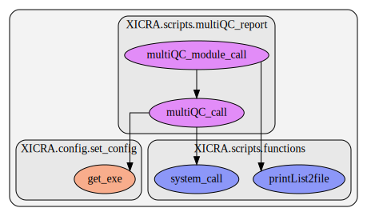

multiQC_report¶
This script contains several functions. Here we show a graph representation of the different functions and relationships among them:
Calls multiQC to generate HTML statistics reports.
- XICRA.scripts.multiQC_report.multiQC_call(pathFile, name, folder, option)[source]¶
multiQC_ report generation call.
- Parameters
pathFile (string) – File containing list of files to include in report.
name (string) – Name to include in the html report.
folder (string) – Absolute path for the output folder.
option (string) – Options to provide to multiQC call.
- Returns
XICRA.scripts.functions.system_call_functions.system_call()output (OK/FALSE)
See also
This function depends on other XICRA functions called:
XICRA.scripts.functions.system_call_functions.system_call()
- XICRA.scripts.multiQC_report.multiQC_module_call(givenList, name, path, option)[source]¶
Prepares files for multiQC report generation.
- Parameters
givenList (list) – List of folder to search for multiQC report.
name (string) – Name to include in the html report.
path (string) – Absolute path for the output folder.
option (string) – Some options to provide to multiQC_call.
See also
This function depends on other XICRA functions called:
XICRA.scripts.functions.printList2file()